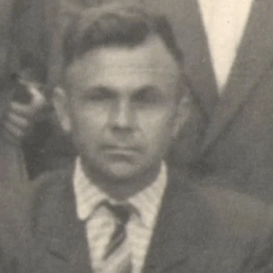
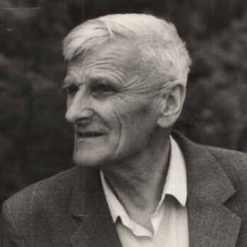

65 лет мы бережно храним нашу историю
Первые экспонаты для музея начали собирать учащиеся отрадненских школ, работавшие на станции юннатов в 1947 – 1955 годах. Под руководством школьных учителей ребята из краеведческих кружков были вовлечены в серьезную исследовательскую работу.
В 1957 году для музея выделили специальное помещение в центре на углу улиц Первомайской и Комарова. В день празднования 100-летия станицы Отрадной 26 мая состоялось официальное открытие народного музея.
У истоков создания Отрадненского музея стояли учителя

Галигоров
Николай Николаевич
Николай Николаевич
первый председатель районного общественного краеведческого бюро
Герасименко
Александра Васильевна
Александра Васильевна
первый директор музея на общественных началах

Галушко
Петр Митрофанович
Петр Митрофанович
первый помощник директора музея на общественных началах
Благодаря их активной жизненной позиции, знаниям и энтузиазму, опыту работы, организаторским способностям почин создания музея нашел отклик и поддержку со стороны местных органов власти. В 1973 году для музея было выделено настоящее здание, созданы экспозиции.
Ложкин Михаил Николаевич
Особая страница в истории музея - Михаил Николаевич Ложкин.
Учитель, краевед, археолог, заслуженный работник культуры Кубани - он внес
неоценимый вклад в развитие и популяризацию краеведения на Кубани
Учитель, краевед, археолог, заслуженный работник культуры Кубани - он внес
неоценимый вклад в развитие и популяризацию краеведения на Кубани
Филиппов Станислав Кириллович
Огромная поисковая и исследовательская работа по военной истории
Отрадненского района была проведена Станиславом Кирилловичем Филипповым.
Благодаря его энергии и таланту журналиста и писателя страна узнала
о героизме отрадненцев в годы Великой Отечественной войны
Отрадненского района была проведена Станиславом Кирилловичем Филипповым.
Благодаря его энергии и таланту журналиста и писателя страна узнала
о героизме отрадненцев в годы Великой Отечественной войны
Что было дальше
В 1985 году Отрадненский народный музей был преобразован в отдел Армавирского государственного краеведческого музея, а в 1996г. получил статус муниципального учреждения культуры.
Сегодня Отрадненский историко-археологический музей хранит более 35 тысяч экспонатов, ведет серьезную исследовательскую и культурно-образовательную работу, обслуживает ежегодно более 15 тысяч посетителей
Наши награды
{kind=link}
{kind=link}
{kind=link}
Очень благодарны работникам музея ст.Отрадной за великолепную возможность так близко познакомиться с археологическими и историческими ценностями.
Просто удивительно, сколько всего древнего, исторически ценного находится в нашей кубанской земле с такой богатой историей! А вы, сотрудники нашего Отрадненского музея, делаете большое, трудное и благородное дело – знакомите наше подрастающее поколение с нашей историей. За Ваш труд примите наше искреннее «Спасибо!».
Учащиеся МОУ СОШ № 4 села Петровского